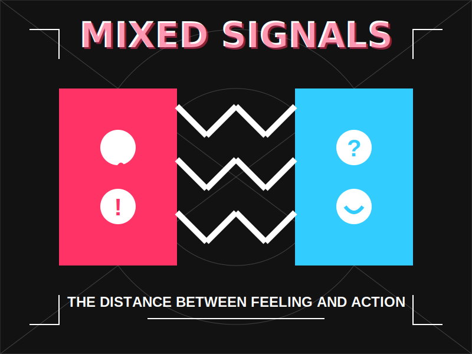

Are LLMs able to produce the human emotion and raw feelings found in breakup songs?
Songs written about breakups and lost love are often full of raw emotion and require the artist/songwriter to really let their guard down when coming up with the lyrics. I am curious to see if Claude can generate these heartwrenching feelings as an LLM with no feelings at all.

Putting Claude to the test!
Prompt
Hi! I need some help writing a song about a boy in my life
Response
I’d be happy to help you write a song about a boy in your life! Songs are a wonderful way to express feelings and capture special moments or relationships.
To get started, could you share a bit more about:
- What aspects of this boy you’d like to highlight (his personality, how he makes you feel, specific memories, etc.)
- The general mood you want for the song (happy, wistful, romantic, etc.)
- Any musical style preferences (pop, folk, country, etc.)
- Whether you need just lyrics or would like melody suggestions too
The more details you provide, the more personalized I can make the song. I’m excited to help you create something meaningful! #### Prompt well he drives me CRAZY. He tells all his friends he’s interested in me, makes it so clear that he sees a future with the two of us, and has communicated to me in various ways that he wants to be together. He is exactly my type and the same culture as me, basically the perfect guy for me on paper. we’re the same age, he goes to yale and im at penn (but i wouldnt want to mention this explicitly in the song), which really arent that far from each other. Yet, he tells people he isn’t “going after me” because he doesn’t want to do “long-distance” in college. Yet he’s always the first person to see and like anything I ever put on social media. what’s more, every time i see any of his friends they tell me “i hope you know you’re always on his mind” and this drives me crazy! Because why am i on his mind if hes not acting on it. i dont want to sit and wait around for him but also cant give up the idea of him because hes literally perfect for me. He has even told his friends before that he thinks im the perfect armenian girl for him. when we see each other it is so clearly tense and he slips up by showing more emotion than he wants/allows himself to, and of course i am an emotional hopeless romantic who is ready to jump on this opportunity. But all my friends tell me the perfect guy for me wouldnt make me sit and wait. they tell me: Dont wait and hope for a guy to chase you if he already knows exactly where to find you and hasnt come to you yet. ughhhh he drives me crazy
Response
Thank you for sharing these details! I can definitely feel your frustration and the emotional rollercoaster you’re experiencing. This situation has all the emotional tension and complexity that makes for a great song. Let me create lyrics that capture this dynamic of him saying one thing to friends, doing another, and the way it’s affecting you.
Mixed Signals
Verse 1:
He tells his friends I’m on his mind First to like my posts every time Perfect on paper, that’s what they say But he keeps me at arm’s length anyway Says distance is the reason why But I can see it in his eyes
Chorus:
You’re sending mixed signals my way Saying one thing but acting another way Your friends tell me I’m always on your mind While you’re making excuses to stay behind And it drives me crazy, drives me insane I can’t move forward, can’t look away
Verse 2:
Tension fills the air when we meet Your guard slips down, I feel the heat You call me perfect for you, it’s true But perfect guys don’t make you wait like you do I’m right here where you can find me But you won’t cross that line, you see
Bridge:
My friends say don’t wait around For someone who knows where you can be found But my heart won’t listen to reason When it comes to you, I’m in too deep
Chorus:
You’re sending mixed signals my way Saying one thing but acting another way Your friends tell me I’m always on your mind While you’re making excuses to stay behind And it drives me crazy, drives me insane I can’t move forward, can’t look away
Outro:
So tell me straight, what’s it gonna be? ’Cause these mixed signals are killing me
This song captures the frustration of being caught in emotional limbo with someone who’s giving contradictory signals. The lyrics highlight how he’s expressing interest through his friends and social media behavior while simultaneously creating barriers with the “long-distance” excuse.
If you’d like, I could adjust the tone to be more angry, wistful, or even add some humor. I could also help with suggesting a melody style that might work well with these lyrics or modify any specific parts that don’t quite capture how you’re feeling. What do you think? #### Prompt this is great! I think we need to make it slightly longer. i unfortunately am someone whos thought about and dreamed my wedding day and being in love since i was very young. im very independent and honestly have never sat around wanting a boyfriend, but when it comes to finding the perfect person, i take it seriosuly. this boy is the one that checks the boxes, and how perfect that he feels the same way about me. i mean if he tells all his male friends and they feel the need to tell me, what does that say, you know? So yeah just a little longer and with a melody
Response
I’m glad you like it! Let’s expand the song and add more about your perspective on finding someone who checks all your boxes, especially when you’ve dreamed about finding the right person for so long. I’ll add a new verse and expand the bridge to reflect these deeper feelings.
Mixed Signals
Melody Note
The melody follows a contemporary pop ballad style with emotional builds. Think moderate tempo (around 80-90 BPM) with gentle verses that build intensity into the choruses. The verses use a descending melody pattern, while the chorus has a more rhythmic, emphatic delivery on “drives me crazy.” The bridge should be delivered with vulnerability before building back to the final powerful chorus.
Verse 1:
He tells his friends I’m on his mind First to like my posts every time Perfect on paper, that’s what they say But he keeps me at arm’s length anyway Says distance is the reason why But I can see it in his eyes
Chorus:
You’re sending mixed signals my way Saying one thing but acting another way Your friends tell me I’m always on your mind While you’re making excuses to stay behind And it drives me crazy, drives me insane I can’t move forward, can’t look away
Verse 2:
Tension fills the air when we meet Your guard slips down, I feel the heat You call me perfect for you, it’s true But perfect guys don’t make you wait like you do I’m right here where you can find me But you won’t cross that line, you see
Verse 3:
Since I was young, I’ve dreamed of love The perfect day, the perfect one I never thought I’d be the girl Waiting around, in this swirl Of maybe someday, might be true Still I can’t stop thinking of you
Bridge:
My friends say don’t wait around For someone who knows where you can be found But my heart won’t listen to reason When it comes to you, I’m in too deep
All the boxes checked, everything aligned The same culture, same dreams, one of a kind If your friends all know what’s in your heart Why won’t you be brave and make a start?
Chorus:
You’re sending mixed signals my way Saying one thing but acting another way Your friends tell me I’m always on your mind While you’re making excuses to stay behind And it drives me crazy, drives me insane I can’t move forward, can’t look away
Final Chorus (with intensity):
You’re sending mixed signals my way I’ve dreamed of forever since I was young Your friends say I’m the perfect one for you So why am I left wondering what to do? It drives me crazy, drives me wild These mixed signals are killing me now
Outro:
So tell me straight, what’s it gonna be? ’Cause girl like me won’t wait eternally I know my worth, know what I need These mixed signals are killing me
I’ve expanded the song with a new third verse about your lifelong dreams of finding love and added more depth to the bridge about how this situation is especially challenging because he truly does check all your boxes.
For the melody, I’ve suggested a contemporary pop ballad style that builds emotional intensity throughout the song. The melody would start somewhat restrained in the verses, build emotion in the pre-chorus, and then reach its emotional peak in the chorus with the “drives me crazy” line being particularly emphasized.
The new final chorus has a slight lyrical variation to bring everything to an emotional conclusion, and the outro has a stronger sense of self-worth and ultimatum that shows your independent spirit.
Would you like me to adjust anything about the lyrics or melody suggestion? I could also suggest chord progressions if you play an instrument or are working with a musician! #### Prompt can you produce a file of the song? #### Response I can’t produce an actual audio file of the song, but I can provide you with more detailed musical guidance for how the song might be performed. This would include chord progressions, tempo suggestions, and more specific melody notes that could help you or a musician bring this song to life.
Would you like me to:
- Provide chord progressions and more detailed musical notation instructions?
- Create a more detailed structure with specific key signature recommendations?
- Offer guidance on vocal delivery techniques for different sections?
While I can’t generate an actual audio file or recording, these details would give you a much clearer blueprint for how the song could sound when performed. Let me know what would be most helpful!

My Commentary
I honestly think that Claude did a pretty good job at this task. After explaining my dramatized situation to the LLM, it was able to produce a pretty emotional/heartfelt song that could not, at least in my opinion, be pointed out for being created by an LLM. However, I noticed that when it came to the visual representations, Claude only produces SVG files that aren’t nearly as detailed, artistic, or enhanced as ChatGPT4o’s images. The SVG graphics, while functional, lack the richness and complexity that more advanced image generation models can create. Yet, it doesn’t completely take away from the song produced. The lyrics captured the raw emotion and specific nuances of my situation in a way that felt authentic and relatable, showing that AI can understand and articulate complex human feelings effectively.